프라임비디오 애니55편 중 인기 55편
순서: 넷플릭스 한국 TOP10 에 든 작품을 먼저(최근에 든 순), 그다음은 TMDB 전 세계 인기도 순입니다 — 넷플릭스 외 서비스는 공식 순위를 공개하지 않습니다. 제공처는 JustWatch 자료(2026-09-24 확인)이며 가입 전 서비스에서 최종 확인하세요.
1 레고 닌자고: 드래곤 라이징 LEGO Ninjago: Dragons Rising시리즈 · 2023 · 애니메이션 · 가족 · 넷플릭스에도제공처 ↗2
레고 닌자고: 드래곤 라이징 LEGO Ninjago: Dragons Rising시리즈 · 2023 · 애니메이션 · 가족 · 넷플릭스에도제공처 ↗2 페파 피그 Peppa Pig시리즈 · 2004 · 애니메이션 · 가족 · 넷플릭스, 티빙에도제공처 ↗3
페파 피그 Peppa Pig시리즈 · 2004 · 애니메이션 · 가족 · 넷플릭스, 티빙에도제공처 ↗3 인빈시블 INVINCIBLE시리즈 · 2021 · 애니메이션 · 드라마제공처 ↗4
인빈시블 INVINCIBLE시리즈 · 2021 · 애니메이션 · 드라마제공처 ↗4 레고 닌자고 Ninjago: Masters of Spinjitzu시리즈 · 2012 · 애니메이션 · 액션 · 넷플릭스에도제공처 ↗5
레고 닌자고 Ninjago: Masters of Spinjitzu시리즈 · 2012 · 애니메이션 · 액션 · 넷플릭스에도제공처 ↗5 배트맨: 애니메이션 시리즈 Batman: The Animated Series시리즈 · 1992 · 액션 · 모험제공처 ↗6
배트맨: 애니메이션 시리즈 Batman: The Animated Series시리즈 · 1992 · 액션 · 모험제공처 ↗6 복스 마키나의 전설 The Legend of Vox Machina시리즈 · 2022 · 애니메이션 · SF/판타지제공처 ↗7
복스 마키나의 전설 The Legend of Vox Machina시리즈 · 2022 · 애니메이션 · SF/판타지제공처 ↗7 해즈빈 호텔 Hazbin Hotel시리즈 · 2024 · 애니메이션 · 코미디제공처 ↗8
해즈빈 호텔 Hazbin Hotel시리즈 · 2024 · 애니메이션 · 코미디제공처 ↗8 촌구석 아저씨, 검성이 되다시리즈 · 2025 · 애니메이션 · 액션제공처 ↗9
촌구석 아저씨, 검성이 되다시리즈 · 2025 · 애니메이션 · 액션제공처 ↗9 헬루바 보스 Helluva Boss시리즈 · 2020 · 애니메이션 · 코미디제공처 ↗10
헬루바 보스 Helluva Boss시리즈 · 2020 · 애니메이션 · 코미디제공처 ↗10 SANDA시리즈 · 2025 · 애니메이션 · 액션제공처 ↗11사이코패스시리즈 · 2012 · 애니메이션 · 범죄제공처 ↗12룩백영화 · 2024 · 애니메이션 · 드라마 · 62분제공처 ↗13팬티 & 스타킹 with 가터벨트시리즈 · 2010 · 애니메이션 · 코미디제공처 ↗14소시지 파티: 푸드토피아 Sausage Party: Foodtopia시리즈 · 2024 · 애니메이션 · 코미디제공처 ↗15배트맨: 케이프 크루세이더 Batman: Caped Crusader시리즈 · 2024 · 애니메이션 · 범죄제공처 ↗16빈란드 사가시리즈 · 2019 · 애니메이션 · 전쟁 · 넷플릭스, 왓챠, 티빙에도제공처 ↗17공각기동대시리즈 · 2026 · 애니메이션 · 액션제공처 ↗18도로로시리즈 · 2019 · 애니메이션 · 액션 · 왓챠, 티빙에도제공처 ↗19쿵푸팬더 3 Kung Fu Panda 3영화 · 2016 · 애니메이션 · 액션 · 95분 · 왓챠에도제공처 ↗20기동전사 건담 지쿠악스시리즈 · 2025 · 애니메이션 · 액션제공처 ↗21몬스터 호텔: 뒤바뀐 세계 Hotel Transylvania: Transformania영화 · 2022 · 애니메이션 · 코미디 · 92분제공처 ↗22
SANDA시리즈 · 2025 · 애니메이션 · 액션제공처 ↗11사이코패스시리즈 · 2012 · 애니메이션 · 범죄제공처 ↗12룩백영화 · 2024 · 애니메이션 · 드라마 · 62분제공처 ↗13팬티 & 스타킹 with 가터벨트시리즈 · 2010 · 애니메이션 · 코미디제공처 ↗14소시지 파티: 푸드토피아 Sausage Party: Foodtopia시리즈 · 2024 · 애니메이션 · 코미디제공처 ↗15배트맨: 케이프 크루세이더 Batman: Caped Crusader시리즈 · 2024 · 애니메이션 · 범죄제공처 ↗16빈란드 사가시리즈 · 2019 · 애니메이션 · 전쟁 · 넷플릭스, 왓챠, 티빙에도제공처 ↗17공각기동대시리즈 · 2026 · 애니메이션 · 액션제공처 ↗18도로로시리즈 · 2019 · 애니메이션 · 액션 · 왓챠, 티빙에도제공처 ↗19쿵푸팬더 3 Kung Fu Panda 3영화 · 2016 · 애니메이션 · 액션 · 95분 · 왓챠에도제공처 ↗20기동전사 건담 지쿠악스시리즈 · 2025 · 애니메이션 · 액션제공처 ↗21몬스터 호텔: 뒤바뀐 세계 Hotel Transylvania: Transformania영화 · 2022 · 애니메이션 · 코미디 · 92분제공처 ↗22
레고 닌자고: 드래곤 라이징 LEGO Ninjago: Dragons Rising시리즈 · 2023 · 애니메이션 · 가족 · 넷플릭스에도제공처 ↗2페파 피그 Peppa Pig시리즈 · 2004 · 애니메이션 · 가족 · 넷플릭스, 티빙에도제공처 ↗3인빈시블 INVINCIBLE시리즈 · 2021 · 애니메이션 · 드라마제공처 ↗4레고 닌자고 Ninjago: Masters of Spinjitzu시리즈 · 2012 · 애니메이션 · 액션 · 넷플릭스에도제공처 ↗5배트맨: 애니메이션 시리즈 Batman: The Animated Series시리즈 · 1992 · 액션 · 모험제공처 ↗6복스 마키나의 전설 The Legend of Vox Machina시리즈 · 2022 · 애니메이션 · SF/판타지제공처 ↗7해즈빈 호텔 Hazbin Hotel시리즈 · 2024 · 애니메이션 · 코미디제공처 ↗8촌구석 아저씨, 검성이 되다시리즈 · 2025 · 애니메이션 · 액션제공처 ↗9헬루바 보스 Helluva Boss시리즈 · 2020 · 애니메이션 · 코미디제공처 ↗10SANDA시리즈 · 2025 · 애니메이션 · 액션제공처 ↗11사이코패스시리즈 · 2012 · 애니메이션 · 범죄제공처 ↗12룩백영화 · 2024 · 애니메이션 · 드라마 · 62분제공처 ↗13팬티 & 스타킹 with 가터벨트시리즈 · 2010 · 애니메이션 · 코미디제공처 ↗14소시지 파티: 푸드토피아 Sausage Party: Foodtopia시리즈 · 2024 · 애니메이션 · 코미디제공처 ↗15배트맨: 케이프 크루세이더 Batman: Caped Crusader시리즈 · 2024 · 애니메이션 · 범죄제공처 ↗16빈란드 사가시리즈 · 2019 · 애니메이션 · 전쟁 · 넷플릭스, 왓챠, 티빙에도제공처 ↗17공각기동대시리즈 · 2026 · 애니메이션 · 액션제공처 ↗18도로로시리즈 · 2019 · 애니메이션 · 액션 · 왓챠, 티빙에도제공처 ↗19쿵푸팬더 3 Kung Fu Panda 3영화 · 2016 · 애니메이션 · 액션 · 95분 · 왓챠에도제공처 ↗20기동전사 건담 지쿠악스시리즈 · 2025 · 애니메이션 · 액션제공처 ↗21몬스터 호텔: 뒤바뀐 세계 Hotel Transylvania: Transformania영화 · 2022 · 애니메이션 · 코미디 · 92분제공처 ↗22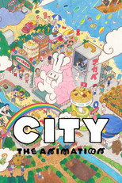
CITY THE ANIMATION시리즈 · 2025 · 애니메이션 · 코미디제공처 ↗23시크릿 레벨 Secret Level시리즈 · 2024 · 애니메이션 · SF/판타지제공처 ↗24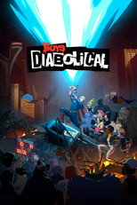
더 보이즈: 디아볼리컬 The Boys Presents: Diabolical시리즈 · 2022 · 애니메이션 · 액션제공처 ↗25주식회사 마지루미에시리즈 · 2024 · 애니메이션 · 액션제공처 ↗26무한의 주인: Immortal시리즈 · 2019 · 애니메이션 · 드라마 · 왓챠, 티빙에도제공처 ↗27후지모토 타츠키 단편집 17-26시리즈 · 2025 · 애니메이션 · 드라마제공처 ↗28짱구는 못말려 외전시리즈 · 2016 · 가족 · 애니메이션제공처 ↗29우주에서 두 번째로 좋은 병원 The Second Best Hospital in the Galaxy시리즈 · 2024 · 애니메이션 · SF/판타지제공처 ↗30북두의 권 -Fist of the North Star-시리즈 · 2026 · 액션 · 모험제공처 ↗31언던 Undone시리즈 · 2019 · 애니메이션 · SF/판타지제공처 ↗32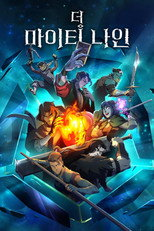
더 마이티 나인 The Mighty Nein시리즈 · 2025 · 애니메이션 · 액션제공처 ↗33꼭두각시 서커스시리즈 · 2018 · 액션 · 모험제공처 ↗34태양보다 눈부신 별시리즈 · 2025 · 애니메이션 · 코미디제공처 ↗35수수께끼 풀이는 저녁식사 후에시리즈 · 2025 · 애니메이션 · 미스터리제공처 ↗36바빌론시리즈 · 2019 · 애니메이션 · 액션 · 왓챠, 티빙에도제공처 ↗37스팅키와 더티 The Stinky & Dirty Show시리즈 · 2016 · 가족 · 애니메이션제공처 ↗38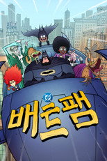
배트팸 BAT-FAM시리즈 · 2025 · 애니메이션 · 가족제공처 ↗39글루코와 레논 Little Big Awesome시리즈 · 2018 · 코미디 · 가족제공처 ↗40쓰레기의 본망시리즈 · 2017 · 애니메이션 · 드라마제공처 ↗41다윈 사변시리즈 · 2026 · 애니메이션 · SF/판타지제공처 ↗42일본삼국시리즈 · 2026 · 애니메이션 · 드라마제공처 ↗43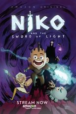
니코와 빛의 검 Niko and the Sword of Light시리즈 · 2017 · 애니메이션 · 가족제공처 ↗44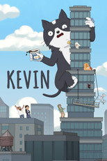
케빈 Kevin시리즈 · 2026 · 애니메이션 · 코미디제공처 ↗45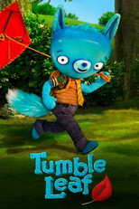
텀블 리프 Tumble Leaf시리즈 · 2013 · 가족 · 애니메이션제공처 ↗46위벨 블라트시리즈 · 2025 · 애니메이션 · 액션제공처 ↗47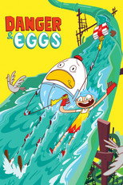
데인저와 필립 Danger & Eggs시리즈 · 2017 · 가족 · 애니메이션제공처 ↗48미국에서 가장 행복한 가족 #1 Happy Family USA시리즈 · 2025 · 애니메이션 · 코미디제공처 ↗49펫 pet시리즈 · 2020 · 애니메이션 · 미스터리 · 왓챠, 티빙에도제공처 ↗50로스트 인 오즈 Lost in Oz시리즈 · 2015 · 애니메이션 · 가족제공처 ↗51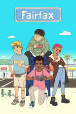
페어팩스 Fairfax시리즈 · 2021 · 코미디 · 애니메이션제공처 ↗52학살 드론시리즈 · 2021 · 애니메이션 · 액션제공처 ↗53루팡 3세 VS 캣츠 아이영화 · 2023 · 애니메이션 · 액션 · 92분제공처 ↗54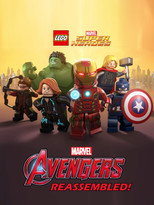
LEGO Marvel Super Heroes: Avengers Reassembled!영화 · 2015 · 가족 · 애니메이션 · 22분제공처 ↗55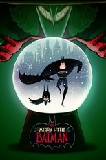
메리 리틀 배트맨 Merry Little Batman영화 · 2023 · 애니메이션 · 액션 · 97분제공처 ↗